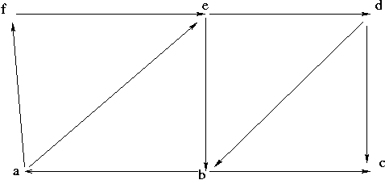

URL: http://www.mathe2.uni-bayreuth.de/axel/graph_ws0203_blatt7.html
Führen Sie am folgenden Beispiel die Berechnung der starken Zusammenhangskomponenten
durch.
Stellen Sie den jeweiligen Kellerinhalt dar. Geben Sie die Variablenbelegung
LOWPT, DFSNUM, CURRENT und S mit aus.
Auf unserem Weg zum Algorithmus für Zweifachzusammenhangskomponenten
(bcc) definieren wir:
Sei G=(V,E) ein ungerichteter Graph ohne Schleifen..
Das Zentrum der bcc sei der Knoten mit der zweitkleinsten DFSNUM. Bei Verwendung der Notation (T,F,B,DFSNUM, FATHER) aus dem DFS Algorithmus definiert man ähnlich wie bei der Einfachzusammenhangskomponente:
LOWPT[v]= min { DFSNUM[v]  {DFSNUM[z] | ex ein Knoten w mit v --T*>
w --B> z}}
{DFSNUM[z] | ex ein Knoten w mit v --T*>
w --B> z}}
Beweisen Sie folgendes Lemma:
1) LOWPT[v] <= DFSNUM[FATHER[v]] für alle v mit DFSNUM[v] >=2
2) v ist Zentrum einer bcc <==> LOWPT[v] = DFSNUM[FATHER[v]]
und DFSNUM[v] >= 2